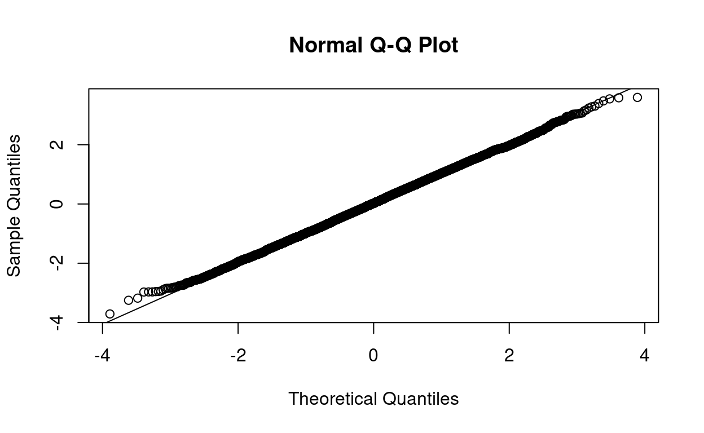
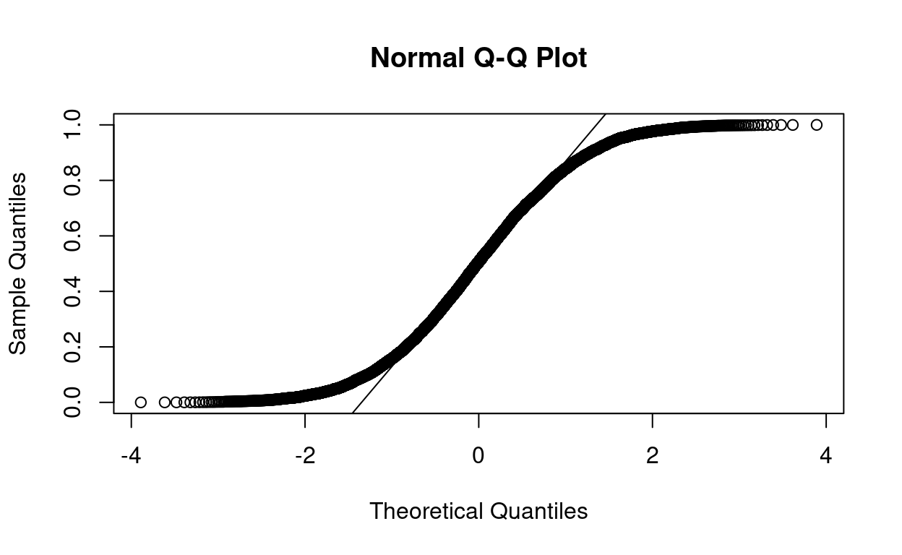

This tutorial focuses on t-test hypothesis testing and checking assumptions. At the end of the tutorial, there are problems about conducting t-tests. Since this tutorial focuses on the t-test, we will mainly be using the t.test(). This function contains all the functionality you need to conduct a t-test in R.
Through out this tutorial, we use certain notations for different components in R. To begin, when something is in a gray block, _, this indicates that R code is being used. When I am talking about an R Object, it will be displayed as a word. For example, we will be using the R object mtcars. When I am talking about an R function, it will be displayed as a word followed by an open and close parentheses. For example, we will use the mean function denoted as mean() (read this as “mean function”). When I am talking about an R argument for a function, it will be displayed as a word following by an equal sign. For example, we will use the data argument denoted as data= (read this as “data argument”). When I am referencing an R package, I will use :: (two colons) after the name. For example, in this tutorial, I will use the ggplot2:: (read this as “ggplot2 package”) Lastly, if I am displaying R code for your reference or to run, it will be displayed on its own line. There are many components in R, and my hope is that this will help you understand what components am I talking about.
1-Sample t-test
2-Sample Independent t-test
Paired t-test
A 1-sample t-test is used when you want to test the mean of a sample to population mean. Here we will give a small review on the assumptions of a t-test and R code to test the assumptions and conduct the test. For this section, we will be using the mpg variable from the mtcars data set.
Before we begin, find the mean, variance and sample size for mpg.
mean(mtcars$mpg)
var(mtcars$mpg)
length(mtcars$mpg)Notice how the sample size is greater than 30. This means we can use a Z-test to conduct the hypothesis test. However, a t-test becomes closer to a Z-distribution when the sample size gets larger. At 30, the t-distribution is close to a Z-distribution. Therefore, we can use R’s t-test which will give similar results to a Z-test.
Before we can begin testing the sample mean with a population mean, we must check the assumptions.
As the question above indicates there are several assumptions that we must check. First let’s check the normality assumption.
The Shapiro-Wilk Test is another hypothesis test. It tests the following hypotheses:
\(H_0:\) The sample comes from a normal distribution.
\(H_1:\) The sample does not come from a normal distribution.
Therefore, we look at the p-value and conduct the hypothesis test.
In R, we conduct a Shapiro-Wilk Test using the shapiro.test(). All you need to specify is a vector of data.
shapiro.test(mtcars$mpg)The QQ-plot is a graphical tool used to assess the whether the data follows a normal distribution or not. If the data follows a normal distribution, it will have a qq-plot like below:

Notice that all the dots follow along the line. This is what we want. All the points need to be as close as the line as possible. Any deviations indicate a violation of the assumption as shown below.

The tails deviate much from the line which indicates a violation of the assumption.
To create a QQ Plot in R, we will use the qqnorm() and the qqline(). The qqnorm() function will create the QQ Plot. The qqline() adds the guiding line to assess the assumption. Both functions only require a vector of data. Additionally, in order to make both of these functions work, they must run at the same time. So highlight both to run them. Otherwise, R will output an error of a missing graphic. Check the assumption on the variable mpg in mtcars.
qqnorm(mtcars$mpg)
qqline(mtcars$mpg)There are statistical tests for this assumption, but for right not we will assume they are independent from each other.
The definitions of continuous is a bit tricky to understand and confirm. However, to run a t-test, the main thing is that the data is a number. That means it can be discrete or continuous.
The best way to check if there are outliers is by plotting either the histogram or box plot. Plot the histogram of the data.
hist(mtcars$mpg)For now, we will assume there are no outliers.
As stated before, to conduct a t-test in R, we will use the t.test(). This function contains all the functionality to 1-sample and 2-sample tests as well as 1-sided and 2-sided tests. Everything you learn here is applicable for the other types of t-tests.
Before we begin, to specify the data needed to conduct the test, we use the x=. This is the first argument in the function. The data just needs to be as a vector.
A one-sided test occurs when the alternative hypothesis is contains a less than (\(<\)) or greater than (\(>\)). The t.test() accounts for the one-sided test using the alternative=.
Test the following hypotheses:
\(H_0: \mu = 25\)
\(H_1: \mu \lt 25\)
Since the population mean is 25, we will need to set the mu= to 25. Additionally, we will set the alternative= equal to "less". Now, conduct the test.
t.test(mtcars$mpg, mu = 25, alternative = "less")Test the following hypotheses:
\(H_0: \mu = 20\)
\(H_1: \mu \gt 20\)
We need to do is set the alternative= equal to "greater" and set the mu= to 20. Now, conduct the test.
t.test(mtcars$mpg, mu = 20, alternative = "greater")Test the following hypotheses:
\(H_0: \mu = 20\)
\(H_1: \mu \neq 20\)
We need to do is set the alternative= equal to "two.sided" and set the mu= to 20. Now, conduct the test.
t.test(mtcars$mpg, mu = 20, alternative = "two.sided")For most research, we are comparing populations to further our understanding. To compare different population means, we use the 2-sample independent t-test. This t-test is different from the paired t-test both mathematically and fundamentally. A paired t-test indicates that the data from the 2 samples are linked to each other in some way. The 2-sample independent t-test does not have the linkage. Here we will talk about how to conduct a 2-sample independent t-test. For the rest of this section, we will compare the means of the mean mpg (variable mpg) for two different types of engines (variable vs, only two categories labeled as 0 or 1) in the mtcars data set.
To begin, find the mean, variance, and sample size for each group (Note: the tidyverse:: is automatically loaded in this tutorial if you want to use that instead).
tapply(mtcars$mpg, list(mtcars$vs), mean)
tapply(mtcars$mpg, list(mtcars$vs), var)
tapply(mtcars$mpg, list(mtcars$vs), length)
#OR
mtcars %>% group_by(vs) %>%
summarise(mean = mean(mpg), var = var(mpg), size = length(mpg))As with the 1-sample t-test, the 2-sample t-test has assumptions that need to be satisfied to conduct the test properly.
As you can see, many assumptions are the same as a 1-sample t-test. The only new assumption is that the variance is the same for each population. If this assumption is not satisfied, a different t-test must be used. R’s t.test() is capable of doing this as well.
Test the assumption of that the populations come from a normal distribution, you will need to test it for each group. Test the assumption for each group. You may need to create vectors for each group.
tapply(mtcars$mpg, list(mtcars$vs), shapiro.test)
mpg_vs0 <- mtcars$mpg[mtcars$vs == 0]
mpg_vs1 <- mtcars$mpg[mtcars$vs == 1]
qqnorm(mpg_vs0)
qqline(mpg_vs0)
qqnorm(mpg_vs1)
qqline(mpg_vs1)There may be a violation due to the qq plot. The data may need to be transformed to ensure that the data is normal. For now, we will assume the assumption is satisfied.
To test for the equal variance assumption, we can use the var.test() which conducts an F-test with the following assumptions:
\(H_0: \sigma_1=\sigma_2\)
\(H_1: \sigma_1 \neq \sigma_2\)
The var.test() requires two arguments, x= and y=, to specify the vectors of data. Test the assumption.
mpg_vs0 <- mtcars$mpg[mtcars$vs == 0]
mpg_vs1 <- mtcars$mpg[mtcars$vs == 1]
var.test(mpg_vs0, mpg_vs1)The equal variance assumption is satisfied. Let’s us assume all the other assumptions are satisfied.
Here we will show you how to conduct a 2-sample t-test for both situations for the equal variance assumption. Before we talk about the different situations, the input for the data in the t.test() can be either two separate vectors (x= and y=) or as a formula and specify the data set (formula=y~x, first argument, and the data=). If you choose to use the formula method, your x variable must specify which observation belongs to which group.
For the rest of this section, we will test the following.
\(H_0: \mu_1 = \mu_2\)
\(H_1: \mu_1 \neq \mu_2\)
The default argument the alternative= is "two.sided"; therefore, you do not need to specify it. Additionally, the default argument for the mu= is 0.
To conduct this t-test, you will need to set the var.equal= to TRUE. Then R will conduct the t-test and use the pooled variance.
t.test(mpg~vs, data = mtcars, var.equal = TRUE)To conduct this t-test, you will need to set the var.equal= to FALSE. However, the default setting for the var.equal is FALSE. Then R will conduct the t-test and use the separate variances and calculate the Satterwaitte DF.
t.test(mpg~vs, data = mtcars)To me, the trickiest part is selecting the independent t-test vs the paired t-test, What I usually do is try to prove that the samples are linked. If I can’t do that, I will then assume it is independent samples. The only quick trick is if there are different sample sizes, then it is independent t-test. However, equal sample sizes does not mean the paired t-test should be used.
When deciding between independent vs paired, I try to see if one group is linked to another group. I focus on finding the link. If I can’t find the link, then I will assume they are independent samples.
Anyways, for the rest of this section, we will use the pharm data set to see if the variable pre is larger after treatment with the variable post variable. We will use the two vectors approach for the t.test().
When conducting a paired t-test, we need to take the difference of the two variables. Find the mean and variance of the difference in the values.
diff <- pharm$pre - pharm$post
mean(diff)
var(diff)
# OR
pharm %>% mutate(diff = pre - post) %>%
summarise(mean(diff),var(diff))The assumptions for the paired t-test are similar to the 1-sample t-test. However, we focus on the difference in the data instead.
Test the normality of the difference in data.
diff <- pharm$post - pharm$pre
shapiro.test(diff)
qqnorm(diff)
qqline(diff)To conduct a t-test in R, set the paired= equal to TRUE in the t.test().
Test the following hypotheses: \(H_0: D = 0\)
\(H_1: D > 0\)
where
\(D=pre-post.\)
Note: in the t.test(), a paired t-test is conducted as \(D=x-y\), corresponding to the arguments x= (first argument) and y= (second argument).
t.test(pharm$pre, pharm$post, paired = T)